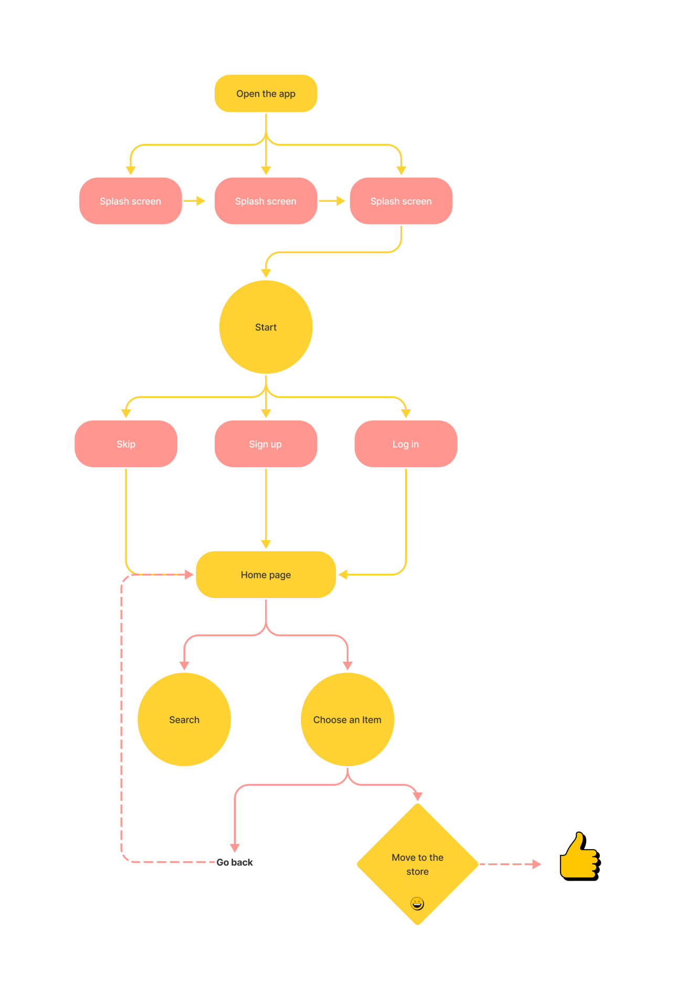

Role: Logo & UI/ UX Designer
Project background
We created this application with a unique approach since it does not focus on buying and selling but rather on comparing costs. We believed it would be a unique and distinctive application, so we performed some surveys, which were good and encouraged us to take the first steps. My role in developing this app was as a Logo & UI/UX designer. So, are you interested in learning more about the app? Let me take you on a little tour of the design process.
Goals
My aims as a UI/UX designer were:
1. To make the app as easy to use as possible.
2. To make page navigation as simple as possible.
3. To avoid utilizing anything obtrusive in the app
screens.
4. To avoid using ambiguous buttons that may lead the
user to click it just to guess where it will take him/ her.
5. Finally, make the app as accessible as possible to
everyone.

What is special about the app?!
Taswaq application is distinct from the other well-known applications, which are applications for purchasing and selling various things. Taswaq application offers various items from various stores so that a user may compare prices between stores. Let me illustrate by using an example. Let's guess someone named Ahmed wants to buy an iPhone and wants to know where he can get it for the best price. All he has to do is open the Taswaq app and search for the phone he wants. Then, he'll get a list of that phone with varying prices at various stores such as Amazon, Noon, and others. Finally, Ahmed will be sent to the desired store through the app. So our objective was to give a helpful, straightforward, and easy way for users to compare costs and purchase the best and most suited for them.
Starting the Journey
First, let me share some information regarding the app's user flow. The first steps in the design process should include a diagram that explains the important points that the user will go through when using the app, as well as how the user will interact with the app. We should keep the user in mind as UX designers; the user should be front and center. So, when considering how the user journey would be with the app, diagramming the user flow is a great place to start. So, let's see a quick diagram!
Paper wireframes
Paper wireframes are an essential part of the design process. After I have completed the general form (Diagramming) of how to go around the application so that the user can finish the process effectively and without any barriers, I begin developing the wireframes on paper. I must decide how the app will work. I want it to be basic, straightforward, and free of distractions that might lead the user astray. Of course, adjustments to the wireframes may be made later because the design is an iterative process, and changes may be required to improve or add any feature that would contribute to producing a positive user experience. Let's take a look at the application's paper wireframes.
Digital wireframes & prototype
After modifying some of the paper wireframes, the next step was to create digital wireframes in Figma. Let's see how it looks like.
Lo-Fi Prototype
Iteration & Hi-fi design
Because design is an iterative process, we may make changes in the lo-fi wireframes, hi-fi design, or even after the product is released. Feedback is critical in these modifications since it enables us to learn more about the needs of our users and how to improve their experience with our product. Great, we're nearing the end of the app's creation; here, I'll show you some of the app's high-fidelity design.
Welcome page
Home page
Item info page
Email verification page
Other ideas for some pages
To decide on the final design for the app pages, UI/UX designers may create many forms for the same page and then compare them to select the best one. The best pages may be determined after receiving feedback from users or the team. So, let's have a look at some pages that include various forms.
Final prototype
Here are a few pages from the final hi-fi prototype. And now we're so close to finishing the app's design and seeing it in reality.
Style guide
Colors
B8B8B8 FFFFFF
000000 777373
Type
AaBbCc
22 pt- Poppins-Semibold
AaBbCc
20 pt- Poppins-Semibold
AaBbCc
15 pt- Poppins-Semibold
AaBbCc
15 pt- Poppins-Regular
AaBbCc
12 pt- Poppins-SemiBold
AaBbCc
12 pt- Poppins-Regular